从骑行转到跑步：一个中年人两年有氧运动的变化
有一些悄然的变化，会在某一天某个时刻突然被感知到，进而促使我们去回顾这个转变是如何在潜移默化间完成的。
一、骑行：规律运动的开启
在2023年的3月份开始规律运动，安排在中午：吃完饭之后骑行20-30min。

中间有小插曲：
同年4月份初的某天中午骑车摔倒，没戴头盔导致眼眶骨折。
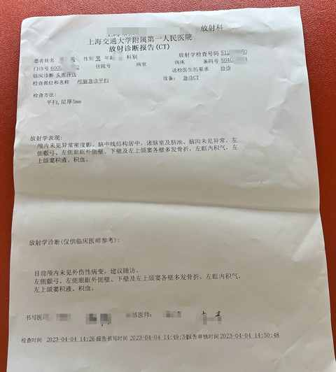
如果骑行，请一定正确佩戴头盔！！！
休息一个多月后，5月份又在闲鱼买了一辆二手捷安特山地车，继续骑。
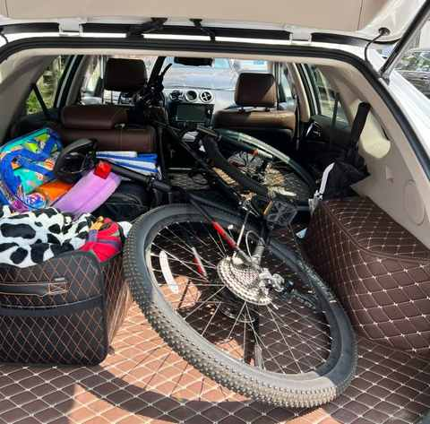
最终 2023 年的骑行里程为 1512km，消耗热量 34831kcal。
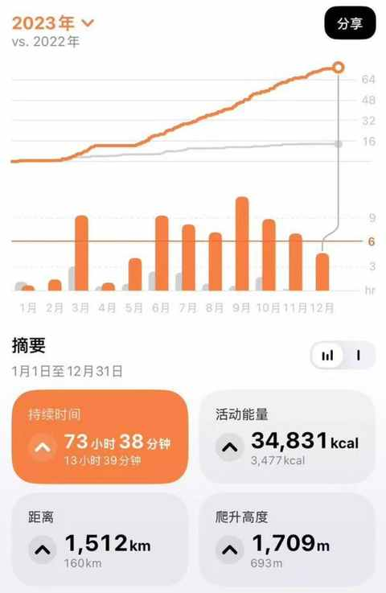
结合自身需求，对自行车做了一些改装：
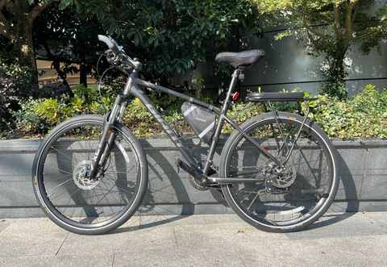
① 更换前叉，现为碳纤维前叉
② 更换轮胎，现为半光头胎
③ 新增后座，可承重 70kg
④ 更换脚踏，现为培林脚踏
二、跑步：试试看能否坚持
2023年的6月份开始尝试跑步，由两个契机促成：
① 寻求其他运动
医生否掉了打篮球等有对抗的剧烈运动，跑步是被允许的运动之一
② 想物尽其用
老婆在交个朋友直播间买了一双跑步鞋
有一说一，相比骑行，跑步在刚开始的阶段真的很难，每一步都得调动意志力的同时还要大口呼吸。
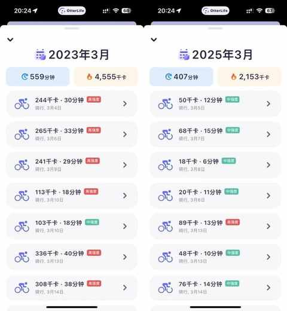
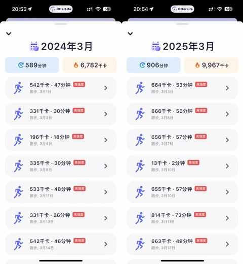
日常跑步以 3-5km 为主，最终半年多的时间跑了接近 300km。
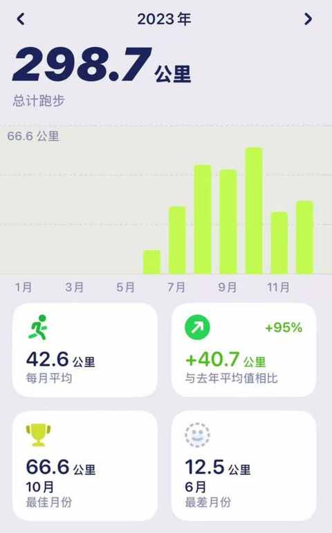
三、变化：跑步成为主要有氧运动方式
时间到了 2024 年，有两个变化悄然发生：
① 跑步次数和里程都上升
以 5-8km为主偶尔跑 10km
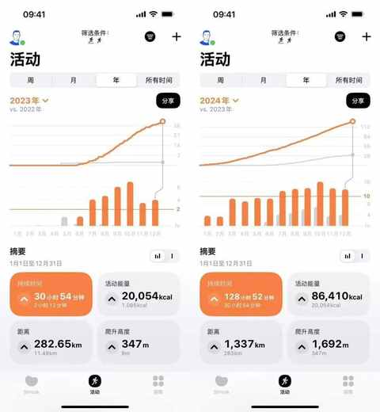
② 骑行频次减少
单次里程有所增加
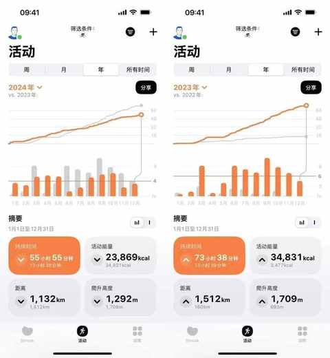
综合考量之后，觉得下面 4 个主客观因素在潜移默化中促成了这一变化：
① 主观因素：跑步更耗能
随着锻炼的增多，有氧能力逐步提升，具体表现是：
在之前的运动强度下运动心率降低，更不易疲劳。
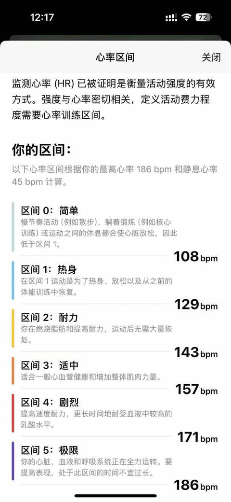
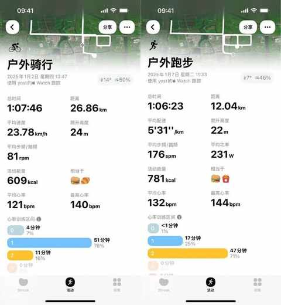
从上图的对比中不难发现：
1）跑步的时候我能在更多的时间里面维持在二区，从而活动能量更高。
2）骑行的时候很难维持心率在130-140之间（燃脂区间），而跑步则很容易维持在这个心率区间。
② 客观因素：骑行受天气影响大
大风天、下雨天、冬天都不适合在一定速度下骑行。
在达到某一个速度之后，路面湿滑和大风对骑行的影响都会陡增，不利于骑行安全的因素就必然会增加。
③ 客观因素： 跑步装备要求简单
跑步鞋比自行车便宜太多了，200-300 元就能有不错的跑步鞋。
骑行对装备的要求就多了不少：车子、码表、骑行服等等……
如果想稳定提高运动能力，骑行比跑步更需要加入骑行团等组织。
④ 主观因素：骑行遇瓶颈
如果想让骑行时候的心率维持在二区范围，那必须要达到一定的速度去巡航，从而达到锻炼效果。
但骑行的时候我很难维持在某一个速度去巡航一小时，可能的因素有很多：腿力不足、骑行姿势不对、车子配置不够、意志力不够……
最为关键的是，这些问题与我而言都不好解决。
四、小结
进入到 2025 年，跑步已经成为主要的有氧运动方式：
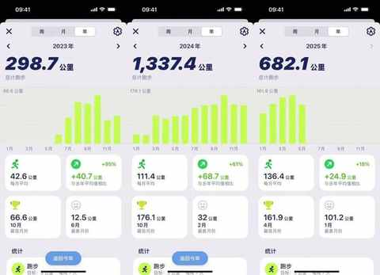
但并没有放弃骑行，骑行是日常通勤的方式之一，只要天气尚可都会骑车去接娃放学，来回 9km 左右。
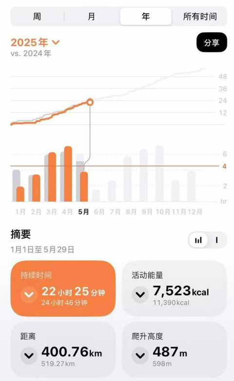